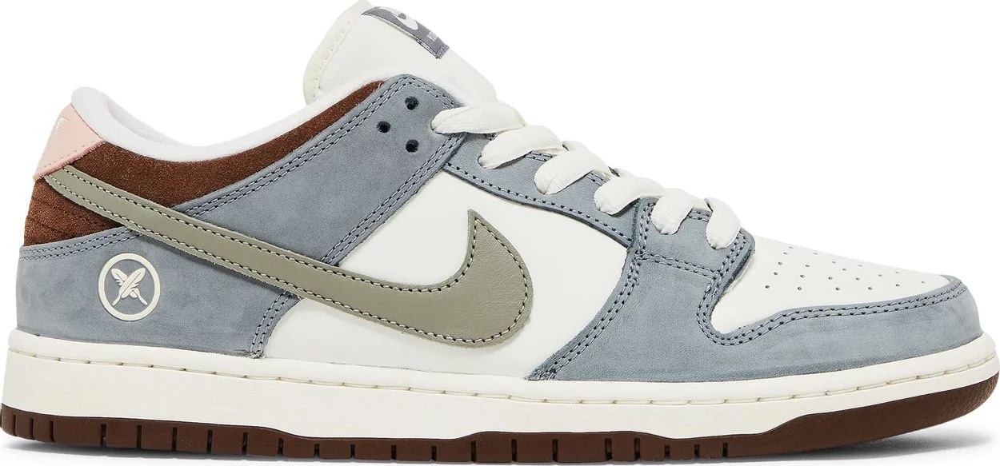
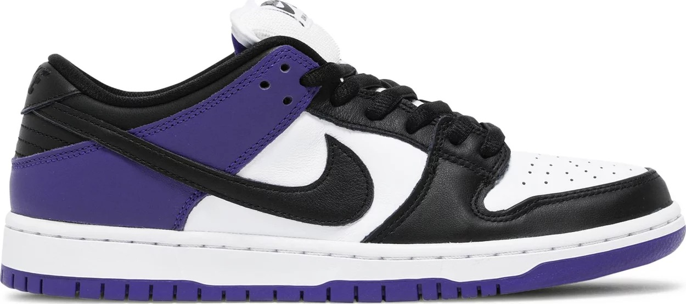
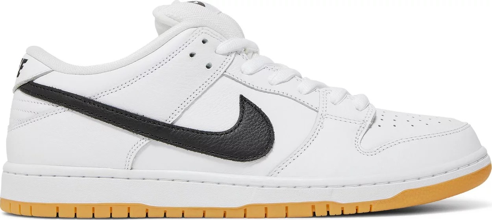
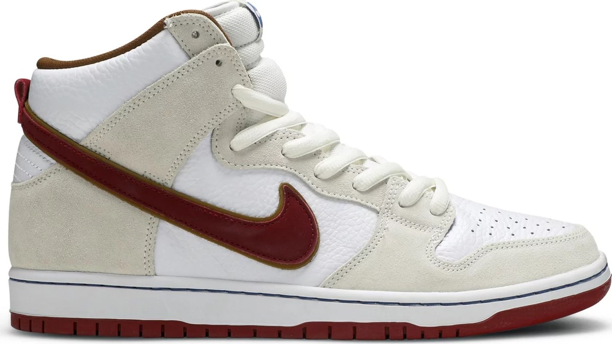
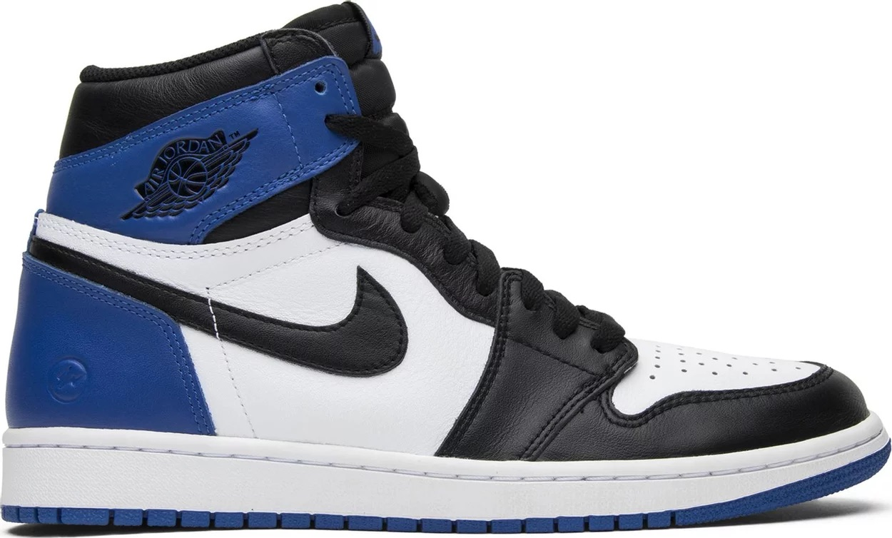
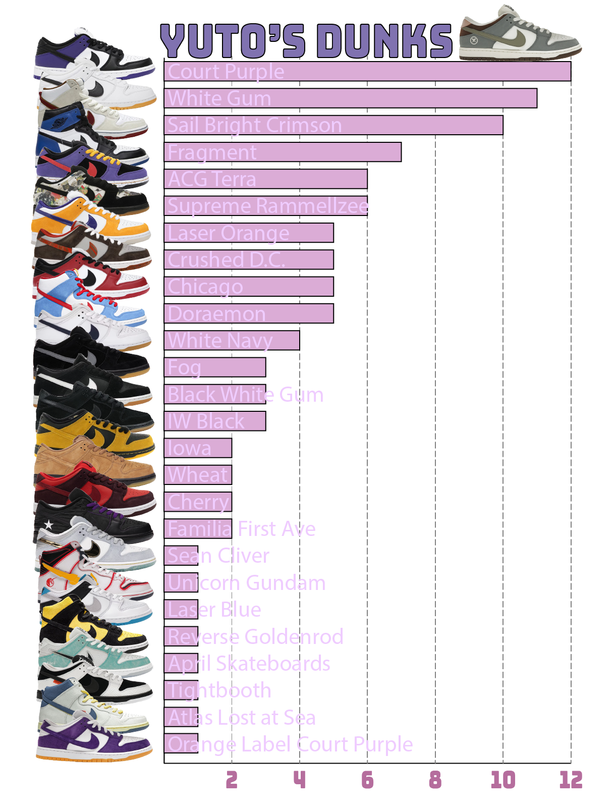
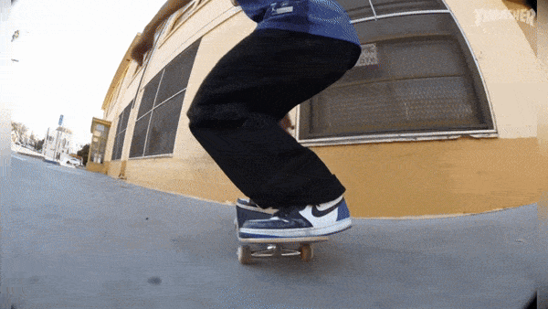
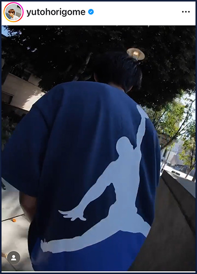
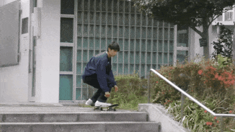
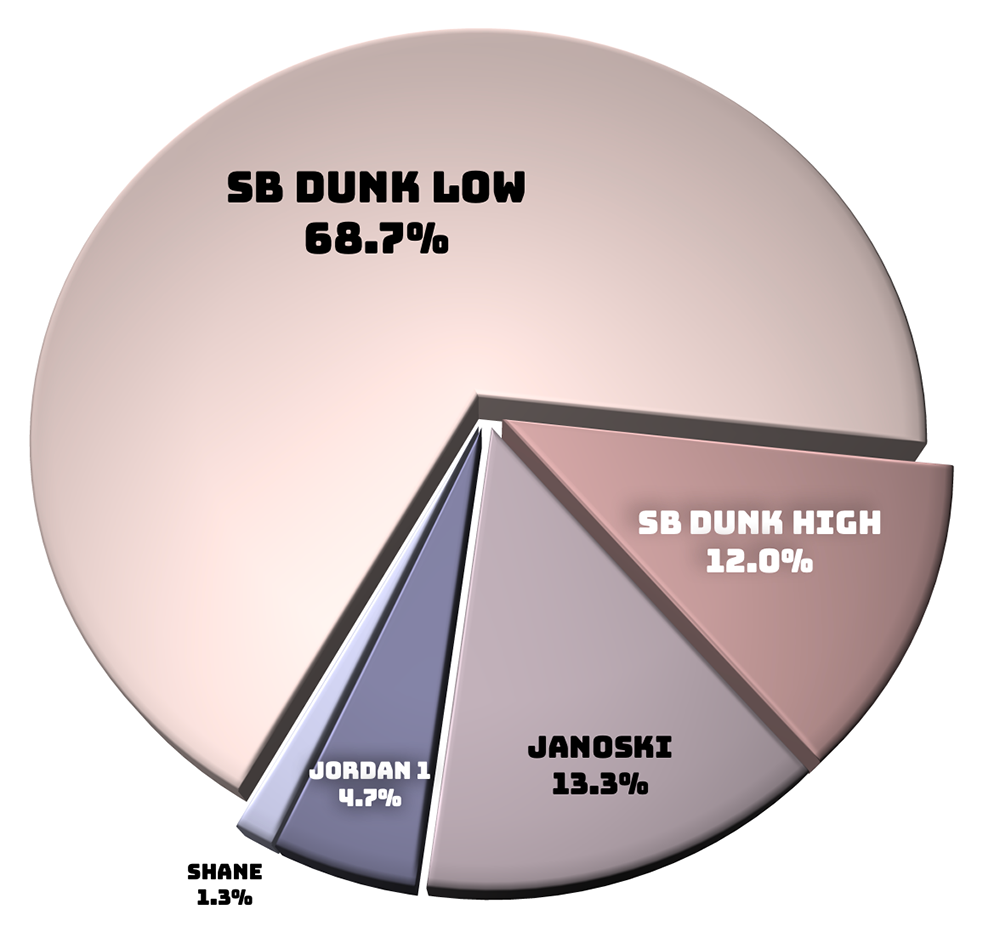

The DATA
Like our full Yuto analysis, the data for this study was compiled from these 5 video parts that document about 5 years of Yuto's street skating:
- Nike SB | Yuto Horigome | April Skateboards Pro Part - May 2019
- The Yuto show ! - June 2021
- Yuto Horigome's "Spitfire" Part - Dec 2021
- Nike SB | Yuto Horigome in Tokyo - Aug 2023
- Yuto Horigome's "April" Part - Dec 2023
Yuto's Top 5 Shoes
Out of the 27 different unique shoes skated in his 150 tricks, there are Yuto's faves.
- #1) Nike SB Dunk Low x Yuto Horigome - 27 tricks

- #2) Nike SB Dunk Low ‘Court Purple’ - 12 tricks

- #3) Nike SB Dunk Low ‘White Gum’ - 11 tricks

- #4) Nike SB Dunk High ‘Sail Bright Crimson’ - 10 tricks

- #5) Jordan 1 Retro High OG x Fragment Design - 9 tricks

The Dunks
121 out of 150 (81%) of Yuto’s tricks are in Nike SB Dunks. The only video part where he doesn’t skate any Dunks at all is in his 2019 Pro debut, so this chart excludes the shoes from that part.

And not included in the chart is Yuto’s most skated shoe, his own signature Dunk colorway with Nike, because it is such an outlier at with 27 clips, more than double the next shoe. Probably because Yuto’s Tokyo part is a promotional video for that shoe.
And just because; Yuto's top 5 Dunks when it comes to skating handrails:
- #1) Yuto Dunk - 14 tricks
- #2) Sail Bright Crimson - 7 tricks
- #3) Court Purple - 6 tricks
- #4) White Gum - 5 tricks
- #5) Iowa - 2 tricks
We also find it kinda cool that if you take the last 25% of tricks done in each video part (excluding Tokyo because... you know, Yuto Dunk ad), Yuto skates the Nike SB Dunk High Sail Bright Crimson the most of his ending rail montages at 40%(4 out of the last 10 tricks) in the Yuto Show.
Maybe something about the shoe being a high top makes Yuto feel more secure doing spine twisting maneuvers on rails. Or maybe it means he just did all of those bangers in the same day.

And besides the Dunks, Yuto skates the Jordan 1 Fragments 7 times, the 5th highest shoe out of 27 unique shoes skated.
He also did his longest line in the Fragments consisting of 4 tricks: wallie, nollie flip, nollie frontside noseblunt a ledge, and a backside 360 down a stair set.

Who wouldn’t also wanna keep the line going if you had the Fragments and the matching Jordan x Fragment Tee to go with it.

A quick breakdown of the three different silhouettes he skates from those 4/5 video parts.
- SB Dunk Low - skated 103 times
- SB Dunk Highs - skated 18 times
- Jordan 1 - skated 7 times
The Rest of the Shoes
Before Yuto wore pretty much all dunks, he wore Janoskis!

Taking a look at his pro debut, Yuto skates these 4 shoes:
- Janoski Slip On - 9 tricks
- Janoski Velcro - 9 tricks
- Regular Janoskis - 2 tricks
- Shanes - 2 tricks
Seems like Yuto was all about function and hated ripping laces. I wonder how he deals with ripped laces on his Dunks nowadays?
Let's wrap up this footwear-focused Yuto analysis with an overall chart of Yuto's favorite Nike shoe models across the 4 non-Dunk-exclusive video parts:

And if you really want to replicate the Yuto look, his most common complete outfit was some combination of a black hoodie, black/dark indigo jeans, and, of course Nike SB Dunk Lows.
Ski mask optional.